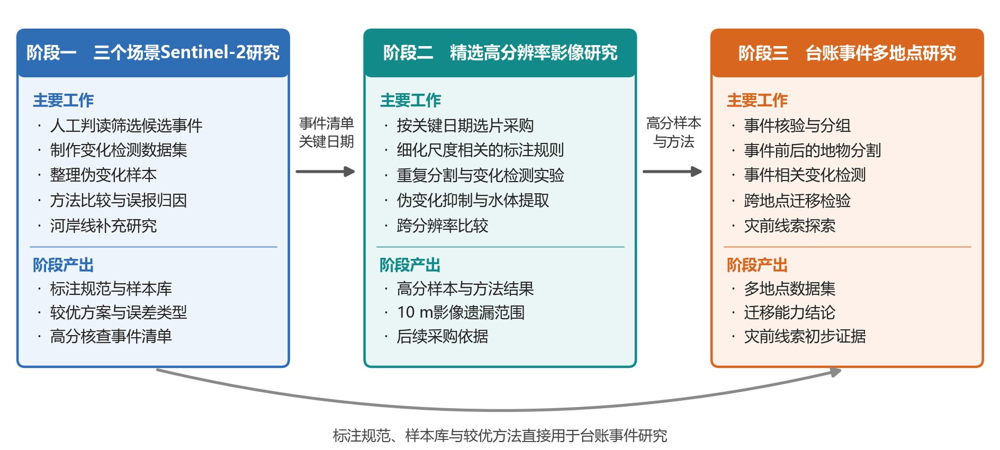

铁路沿线多时相遥感研究平台
京广线沿线三个测点与历史水害台账事件的多时相遥感研究：数据、方法、实验、结果和工作台集中在这里，点击任一部分即可进入。
总体技术路线图

点击图中的方框进入对应部分。“路线A 地物分割”“路线B 直接变化检测”“共同开展伪变化抑制”“河岸线研究”在两个层次、两种分辨率下各有一套实验，点击后再选择数据项。查看原图 · 全部目录
总体思路
研究要回答的三个问题
- 地表是什么：对每一期影像做地物语义分割，区分水体、植被、耕地、裸露地表和建成地表，作为解释前后变化的基础。
- 哪里发生了变化：用两条路线识别变化。路线A先分割、再比较前后两期的地物类别；路线B把前后两期影像直接送入变化检测网络。
- 检出的变化是不是真的：云与云影、薄雾、配准错位、成像条件和分类不稳定都会造成“伪变化”，两条路线共同开展伪变化抑制；收割、返青、水位涨落是真实的周期性变化，保留并说明周期。
在此之外，根据铁路方面的要求补充河岸线研究：提取水面范围、水边线和断面河宽，区分丰枯水期之间可以恢复的季节涨落与不同年份持续存在的岸线变化；并以台账事件为线索开展灾前线索分析，探索事件发生前是否已有可以观察的持续地表变化。
两个实验层次
- 层次一：三个测点初步探究。株洲南、衡阳北、韶关南分别以河流与陆地交错、施工扰动集中和植被覆盖的山地坡面为主要特征。在这里建立判读与标注规则、实验流程和评价方式，比较已有方法。
- 层次二：全量台账事件研究。以历史水害台账为线索组织多地点样本，检验层次一形成的规则和方法在不同地区、不同事件中是否适用。
两个层次共用同一套数据处理、标注规范和评价协议，只针对研究对象和影像尺度作相应调整。
两种分辨率各做什么
Sentinel-2 影像分辨率 10 m、约 5 天重访一次、免费获取，适合在大范围内连续追踪地表变化，先把变化找全、把规则定稳。亚米级高分辨率影像能分辨道路、零散建筑、开挖边界和小型坡面破坏，但需要采购、覆盖有限，因此主要用于 Sentinel-2 筛选出的关键事件和关键时相，并回答“10 m 影像漏掉了多少”。
数据处理与样本准备
多源数据先经过三个环节形成统一的数据集：质量检查与时相匹配（记录每期的云、雾、阴影和缺失，为光学影像匹配最近的雷达与地形数据）、空间对齐与误差检查（统一坐标和网格，精配准并核查残余误差）、人工判读与数据标注（分割标签、变化标签和观测质量记录）。标注把经过核查的稳定区域与无法判读的区域分开（1 变化、0 稳定、255 未审查或不可判读），避免把没有检查过的地方当成“没有变化”。
推进顺序

执行上按数据条件分三个阶段推进：先在三个测点上利用 Sentinel-2 开展变化检测和伪变化抑制，同时补充河岸线分析；再针对第一阶段筛选出的高价值事件获取高分辨率影像，在更精细的尺度上重复实验；最后以台账事件为线索推广到更多地点，并探索事件发生前的地表变化。每个阶段先把已有方法在本项目数据上逐一复现和比较，选出各任务、各场景下表现最好的方案，再分析反复出现的错误，据此开展有针对性的改进。
成果定位
紧邻轨道的问题已有视频监控、巡检和无人机覆盖；卫星遥感更可能发挥作用的，是高陡长大边坡、铁路上方山体和无人机禁飞区等常规手段难以充分检查的区域。研究的产出是变化的位置、范围和发生时间，用来指引现场核查和重点监测的布设，而不是替代高频的地面监测。
进展时间线
- 从 Sentinel-2 时间序列中整理 99 景影像并完成五类地物标注，比较十余种分割模型和六种多源融合方式；在衡阳施工案例上验证分割后比较与规则筛选；在台账事件上试验三十余种无监督变化检测方法。
- 在 95 景多源同样本数据上完成输入对照、跨测区和标注量实验（见 2.2.2 语义分割）。
- 《铁路沿线多时相遥感研究执行方案》定稿：三个阶段、四类研究内容、第一批方法与评价协议。
- 总体技术路线图定稿；三测点 Sentinel-2 逐期判读系统上线（看清程度、找不同、精确标注三步，组长复核），并扩展到 2021—2026 年全部 505 期（见 2.2.3 变化检测）。
- 制定三个测点三十天研究推进与分工计划（2026-09-28 至 10-27）：首周统一规则并启动训练，第二周完成 Sentinel-2 主要比较，第三周完成高分主要比较，第四周独立评价与结论核查。
- 复核首批判读中的疑似水体变化，后续区分纯反光、真实水情和水色变化（见伪变化抑制）。
- 三站逐期判读、多轮变化精标、前图一致性与右岸观察范围更新，发布e版并完成基线/时间外推；后续种子和融合实验继续运行（见当前变化训练）。
- 台账底账、观测、源区、原因提示与对照候选更新，建成盲标台和组长研究台，等待真人确认与新数据（见台账整理）。
- 地物精标第四版预标上线，加入先整期质量与独立云影；本轮完成相关资料核对并同步总体平台（见地物精标）。